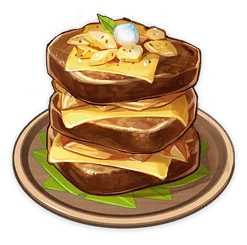

Plats du Bon chasseur :

Poulet mariné aux fleurs sucrantes
Poulet rôti au miel et aux fleurs sucrantes. Ces derniers complémentes la viande de volaille tendre à la perfection.
Empil'tout
Un plat copieux originaire de Mondstadt riche en viande, pommes de terre et fromage. On le sert surtout pendant le Ludi Harpastum.

Tourte de lune
Un plat typique de Mondstadt. La viande marinée est très savoureuse et reste sucrée et juteuse après avoir été rôtie en pâte feuilletée. C’est un élément essentiel des festivités de Mondstadt.
Plats de Wammin's restaurent :

Aumonières de jade
Un plat à l’allure raffiné et au goût inoubliable. Enveloppé par les légumes et arrosé par un bouillon légèrement épicé, le jambon libère toute sa saveur à la première bouchée.

Viande façon Dubhe
Un plat de viande braisée. La viande maigre et la graisse sont frites avec des épices dans une poêle jusqu’à ce qu’elles soient croustillantes. Le résultat est doux et léger, avec une couleur translucide. On dit qu’il s’agit d’un chef-d’œuvre inventé par l’une des Sept Étoiles de Liyue, le Dubhe, après de longues recherches.

Tofu aux amandes
Un dessert à base d’amandes à la texture tendre et au goût intense. Le nom “tofu” lui a été donné en raison de son apparence.